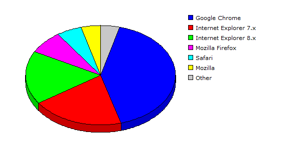

| Rank |
Browser |
Hits |
Visitors |
| 1 |
Google Chrome |
52442 |
42.52% |
4559 |
41.44% |
| 2 |
Internet Explorer 7.x |
18760 |
15.21% |
2201 |
20.01% |
| 3 |
Internet Explorer 8.x |
32386 |
26.26% |
1912 |
17.38% |
| 4 |
Mozilla Firefox |
10397 |
08.43% |
817 |
07.43% |
| 5 |
Safari |
4734 |
03.84% |
596 |
05.42% |
| 6 |
Mozilla |
968 |
00.78% |
467 |
04.25% |
| 7 |
Netscape 5.x |
3620 |
02.94% |
434 |
03.95% |
| 8 |
Netscape 4.x |
7 |
00.01% |
3 |
00.03% |
| 9 |
Internet Explorer 6.x |
4 |
00.00% |
3 |
00.03% |
| 10 |
HTTPClient |
3 |
00.00% |
3 |
00.03% |
| 11 |
Internet Explorer 5.x |
2 |
00.00% |
2 |
00.02% |
| 12 |
Opera |
4 |
00.00% |
1 |
00.01% |
| 13 |
Jakarta Commons-HttpClient |
1 |
00.00% |
1 |
00.01% |
| 14 |
Netscape 7.x |
2 |
00.00% |
1 |
00.01% |
| 15 |
Wget |
1 |
00.00% |
1 |
00.01% |
| |
Total |
123331 |
11001 |
|
Description: This report contains statistics about the browsers that your visitors use.
|
|